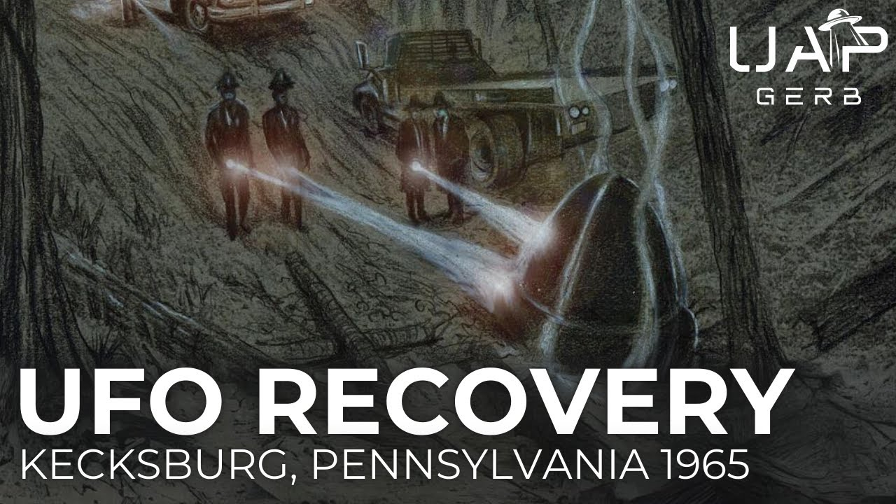

The 1965 Kecksburg, Pennsylvania UFO Crash

Published: 2024-09-12 · Duration: 1:15:39 · Channel: UAP Gerb
Description
A deep dive into one of the United State's most famous UFO stories, the 1965 Kecksburg, Pennsylvania UFO crash retrieval. This event has inspired a small town in midwest America to build a monument and hold a yearly festival for the acorn-shaped craft that allegedly crashed one winter's afternoon in 1965.
Kecksburg offers one of the most complete, intriguing, and credible UFO crash retrieval stories of all time, featuring decades of rich investigation by Stan Gordon and Leanord Stringfield, a wealth of first-hand civilian witnesses, a mysterious and lacking blue book report, possible involvement from US President Lyndon B. Johnson, and a legal case won against NASA who supposedly lost files on the craft's recovery in 1975. Next to Roswell, Kecksburg is by far the US's most complete and rich crash retrieval story.
The craft allegedly recovered at Kecksburg features an incredibly unique description: 10-12 feet tall, 8-10 feet wide, metallic almost a dull brass color, no visible signs of propulsion/landing gear/windows, and strange, almost hieroglyphic writing around the base.
Does the Keckbusrg case feature a mix of a landed meteor and nothing as claimed by Blue Book, a soviet space capsule as claimed by numerous skeptics, or was the crash indeed a craft of non-human intelligence?
0:00 Intro 01:30 The Crash 13:24 The Witnesses 27:28 The Craft 38:49 Dr. Eric A. Walker 43:12 President Lyndon B. Johnson 51:44 After the Crash 1:00:51 Bodies? 1:06:32 Conclusion
Grant Cameron Files: https://onedrive.live.com/?authkey=!AP3n1G0-zV5uM8k&id=1305978EAF66D210!48635&cid=1305978EAF66D210
Grant Cameron Files Referenced: - James Webb Kecksburg - Johnson Weird Walker - Kecksburg Period Logs - Kecksburg PResidential Schedule - Kecksburg (1-5)
Unsolved Mysteries Episode: https://www.youtube.com/watch?v=U2dlW6hUnuk
UFO Crash Kecksburg: The Untold Story (Documentary) | 1998: https://www.youtube.com/watch?v=YigXIRDkYGg
The New Roswell: Kecksburg Exposed: https://www.youtube.com/watch?v=3uubg_fwnTA
Stan Gordon link: https://www.stangordon.info/wp/kecksburg/
Stan Gordon Crash Retrieval “Kecksburg Incident: An Updated Review”: https://archive.org/details/crash-retrieval-conference-proceedings-1st-annual-nov-2003/page/174/mode/2up?q=kecksburg
Kean suing NASA: https://www.vice.com/en/article/the-most-important-ufo-crash-happened-in-pennsylvania-not-roswell/
Leslie Kean “Combating Media Ridicule and Searching for Evidence on the 1965 Kecksburg Crash Case”: https://www.youtube.com/watch?v=VSAK0sDAovY&t=787s
NASA Cosmos 96 from 1965: https://nssdc.gsfc.nasa.gov/nmc/spacecraft/display.action?id=1965-094A
BLUE BOOK Case Files: https://archive.org/details/1965-12-6978261-Indiana-Ohio-Pennsylvania-Michigan-Canada-10129- - https://archive.org/details/1965-12-8693327-Indiana - https://archive.org/details/1965-12-8693327-Indiana/mode/2up?q=acme
Romansky (firefighter) testimony: https://www.youtube.com/watch?v=A5XqWh7RH4M
Blue Book bell/acorn sightings: - https://archive.org/details/1952-11-9170045-DEQUINCY-LA/page/0/mode/2up?q=acorn - https://archive.org/details/1956-11-7073394-SouthWeymouth-Massachusetts/mode/2up?q=acorn - https://archive.org/details/nara-pbb/NARA-PBB90/page/n837/mode/2up?q=bell - https://archive.org/details/1965-11-8679228-NewYork-NewYork/page/IV/mode/1up?q=bell - https://archive.org/details/1965-08-9371437-Bunkie-Louisiana/mode/1up?q=bell - https://archive.org/details/1957-08-6969008-CecilNAS-FLa/mode/2up?q=bell - https://archive.org/details/1954-02-6779799-Puente-California/mode/1up?q=bell - https://archive.org/details/1965-08-7471787-Macon-Georgia/mode/2up?q=bell - https://archive.org/details/1957-02-6786724-LincolnAFB-Nebraska/mode/2up?q=bell
2018 Reddit Leak [deleted] - https://www.reddit.com/r/aliens/comments/1cqwpdx/deleted_by_user/?share_id=Y05ITtC33WVmh7QaYtV1d&utm_content=2&utm_medium=ios_app&utm_name=ioscss&utm_source=share&utm_term=1 - https://archive.is/Z0pT0
ALL OTHER RESEARCH DOCUMENTS TO BE FOUND HERE: https://docs.google.com/document/d/1xuGeFVwNMsxZ2CRAR94yKcriAbUbOauVPiL6PtOq778/pub
Thumbnail Art By: https://www.deviantart.com/berlinsart/gallery
Music By: - https://www.youtube.com/channel/UCacamYVDLEtG00SWmJuR8qw - https://www.youtube.com/channel/UCz71_7z7NphLPZ0l_7G3Llg
THIS VIDEO IS FOR EDUCATIONAL PURPOSE ONLY! FAIR USE PRINCIPLES UNDER SECTION 107 OF THE COPYRIGHT ACT.
ufo #uap #uapnukes #uapdisclosure #ufology #ufonews #ufosightings #uapsightings #ufofootage #uapfootage #hynek #condoncomittee #Jallenhynek #projectsign #projectgrudge #projectbluebook #bluebook #ufocongress #SOL #solfoundation #karlnell #Battelle #UFOreverseengineering #lockheed #skunkworks #lockheedmartin #rosscoulthart #fastwalker #blackvault #slowwalker #kingman #ufocrash #nickredfern #Grusch #Magenta #michaelherrera #USO #TimothyGallaudet #mystery #mysteries #unexplained #extraterrestrial #space #technology #greer #kecksburg #kecksburgUFO #nasa
Transcript
Show transcript
It didn't start or end with Roswell. The 20th century of the United States saw several now infamous alleged UFO crash cases that feature rich paper trails, a wealth of witnesses, and endless mystery. Today we travel to the Midwest of the continental United States to a sleepy town in Pennsylvania named Kecksburg. We're on the evening of December 9th, 1965, something from the sky crashed into the nearby woods, sending the town and the U.S. military into a frenzy, leading to one of the most discussed and debated UFO crash retrieval cases of all time. Hey guys, it's UAP Gerb. Today we finally visit one of my most requested crash retrieval cases, the 1965 Kecksburg Pennsylvania UFO crash. Kecksburg has long been a favorite case in life due to the exhausting lists of local witnesses, extensive press coverage, and fascinating ties to Blue Book and Project Moondust. What, if anything, crashed into the woods that cold winter evening. Was it a meteor as Blue Book claimed, a Soviet satellite like many debunkers have claimed, or indeed a craft of non-human intelligence as described by numerous eyewitnesses? In a quick note here guys, excellent research has been conducted by respected ufologists on this case. I will primarily be referencing the work of the most seasoned Kecksburg investigator Stan Gordon and the legend with whom Gordon shared much of his research and witnesses, Leonard Stringfield. In the early evening of December 9th, 1965, thousands of residents across Michigan, Indiana, Ohio, West Virginia, Pennsylvania, New York, and Canada observed a fiery brilliant glow streak across the sky, a ball of fire leaving a smoke trail, estimated to be visible for 20 minutes after the passing of the object. Numerous ground-based civilians and pilots initially thought the object to be an aircraft in peril, especially due to pieces of the object seemingly detaching and falling over Lapeer, Michigan, and Alleria, Ohio. The material would later be recognized and studied within the official Blue Book report on Kecksburg. As noted by Clark McClelland, UFO researcher and former NASA Apollo space program member, as well as Dr. Paul Anir, professor of astronomy, the object would make a change of course roughly 25 degrees when traveling over Alleria, Ohio. Similar calculations showed the object to be between 40 and 60 miles in altitude when first observed over Michigan. McClelland estimated the speed of the glowing object based on the distance of witness observations to be traveling at roughly 17 miles per minute or 1,062 miles per hour. For reference, meteors traveled between 25 and 144,000 miles an hour, so even if McClelland's calculations were off by a factor of 10, the object was still traveling at much slower speeds than a meteor in Earth's atmosphere. Around 4.45 pm, the object plunged into the woods of Kecksburg, Pennsylvania. The object made a turn between Greensburg and La Trobe and was reported from local communities as it moved towards the south. Near Laurelville, the object turned again and began to track northeast towards the Kecksburg area where it reportedly impacted into the woods. Closely tracking the object, Project Blue Book dispatched a three-man Air Force team from the 662nd Radar Squadron at the Oakdale Army installation near Pittsburgh to investigate. The squadron was operating under control of the Aerospace Defense Command. These orders were presumably given by Major Hector Quintanilla, who took the reins of Blue Book in 1963. The 33-page report on Kecksburg from Blue Book has Quintanilla's name all over the memorandum for record, and it is important to note of Blue Book's conclusion of Kecksburg. Under the major, the case was designated as a meteor. And quickly worth mentioning, Blue Book states the three-man team found no materials at the crash site. Blue Book curiously marks this case under ACME, Pennsylvania. Why is this? Researchers are not sure, but one possibility is the Air Force personnel interviewed witnesses who lived nearby in the town of ACME. And speaking of Quintanilla, let's pay special attention to April 5, 1966, where the United States Air Force Major lied before the House Armed Services Committee, stating that Blue Book had no radar cases that were unexplained. Scientific advisor to Blue Book, J. Allen Heineck, revealed this deception by providing three such cases, 1951 Goose Bay, 1956 Lakinheath, and 1957 Shrevaport. Although town residents argue to this day over what crashed in the woods that night, the town witnesses agree within an hour of the impact military forces swarmed the area almost as quickly as the arrival of Penn State Police and the Kecksburg Volunteer Fireman. Twenty-eight years, I'm a fireman here at Kecksburg. It does me good as a young, old fireman now that now we know that something did happen. The military was here. Everybody here is correct in what they've seen and what they heard. I think because of the lay of the land and the terrain, there was different points of vision from wherever they were at that point. The outcome of our town meeting, a majority consensus that something big did happen in Kecksburg on December 9th, 1965, and that despite the official report to the contrary, soldiers were on site. Regardless of USAF and Blue Book denying a presence of more than three men at Kecksburg, a statement that will later be contradicted by Dr. Eric A. Walker, Kecksburg residents gave descriptions of multiple types of military men, US Army soldiers equipped with M1 rifles, USAF personnel with blue fatigues and blue berets, and men in civilian clothing seemingly barking out orders and some witnesses even described men in hazmat suits labelling them as moon suits. There are also myriad local press articles like these from the Pittsburgh Press on December 10th that also contradict the military's denial of a presence at Kecksburg. The description of Air Force men may be paramount to investigating this crash recovery case. Referred to as blue berets, Leonard Stringfield made numerous mentions to a UFO crash recovery intelligence team stemming from the Air Force donned in blue fatigues and blue berets. In crash retrievals of the third kind, a case study of alleged UFOs and occupants in military custody. Stringfield stated he had been made aware from other military forces of a rapid reaction special forces unit named blue berets who can quote, operate secretly and effectively by using diversionary tactics to prevent public interference, end quote. This unit was housed at certain military bases as rapid reaction units in a constant state of ready to address downed or crashed UFOs. Stringfield even stated to have met a former member of the elite blue berets when visiting the University of Dade City, Florida for a lecture quote. We talked about the elite force, its makeup and functions and some of his experiences in Vietnam behind enemy lines. Although he had never participated in a UFO crash retrieval, he was aware that one of his fellow members had the experience. Details were scanty, but Cameron calls that his friend referred to his participation in the recovery of a quote unquote big head from an alien craft and quote. In UFO crash retrieval status report for fatal encounters at Fort Dix, McGuire Stringfield met with a man named Jeff Morse who claimed to be a former blue beret. Morse would tell Stringfield in 1985 to 1987 about an incident at Fort McGuire Air Force Base in which a non-human entity was shot to death by US forces. Quite a bit to discuss about the blue berets, so maybe we will save that for another video. But I do want to mention Air Force blue berets were made famous with the creation of the USAF 1041 security police squadron, which operated during 1965 to 1967. The 1041s and their blue berets were implemented in Operation Safe Side in which the Air Force deployed a highly trained unit of combat security police known as active defense to repel raids on air bases in Vietnam. But the origins of USAF personnel and blue fatigues and blue berets can be traced back to 1956 with the creation of the strategic air command elite guard under General Curtis LeMay, who I've spoken about many times. The SAC elite guards operated as air police from 1956 to 1966 within the time of our Kecksburg case, serving as part of the US Air Force and US Department of Defense. The blue beret SAC elite guard were tasked with providing security at headquarters of strategic air command of the US Air Force. One such SAC base is Lockbourne Air Force Base in Columbus, Ohio. Remember the mention of this base as we will later discuss a witness who claimed to have briefly guarded the crashed UAP from Kecksburg at Lockburn AFB. Let's get back to Kecksburg and analyze the events around the time of an object crashing in the woods. With news media starting to swirl about stories of a fireball crashing in the area, local news director John Murphy out of WHJB Greensburg, Pennsylvania received a call from a startled mother who claimed she and her children had observed a fiery object fall into the woods where a cloud of blue smoke began rising after impact. Murphy, a key player in this story moving forward, arrived to the woods and investigated the scene for some time before Carl Metz, a state police fire marshal, and another investigator arrived to the scene. The two investigators entered the woods and upon returning and being questioned by Murphy, told Murphy, quote, you better get your information from the army, end quote. Murphy would then arrive to the state police barracks in Greensburg for more information, where he observed army and Air Force men swarming the location. Murphy would interview many town residents about what they saw and experienced in Kecksburg the evening of December 9th, and excitedly pieced together a radio documentary titled Object in the Woods. Curiously, Murphy's wife and other WHJB employees would state Murphy was approached by men at the station leading to a radical alteration of his program. Murphy would broadcast a heavily censored version of his documentary, starting the event with an odd disclaimer. And state that many witnesses whose testimony had been taped no longer wish to air their statements due to fear of reprisals from the U.S. Army. Stan Gordon would even go so far as to state he had received notarized documents from station employees, claiming USG elements were confiscating news tapes of eyewitness accounts and were not allowing said account to be broadcasted. John Murphy would tragically die in a hit and run incident shortly after the event, and never claimed publicly to have entered the woods and to have seen what crashed in Kecksburg. But in 2003, John's wife claimed he had told her of entering the woods and witnessed a strange metallic object on the ground. What was this object observed by so many and that later witnesses would state was transported out of the woods in the early morning of December 10th by army trucks covered by a tarp. Fortunately, we have numerous witness testimony to analyze. There was no tail section, there was no motors, there was no windows, there was no doors. There was big enough for a grown person to stand up in. It had like Egyptian writing, like backwards writing on it, stars and circles and dashes and lines and things like that. It looked like an acorn. It was really weird. A first hand witness questioned at length by both Stan Gordon and Leonard Stringfield is James, often referred to as Jim Romansky. Romansky served as a volunteer fireman whose company was dispatched to Kecksburg to assist with the search of what was thought to be a downed aircraft. Romansky first approached Gordon in 1987 to tell his story. He had previously feared ridicule for years, but wanted to finally give his testimony. On the night of 1965, with the search teams combing the woods, Romansky heard via walkie talkie the crash site had been discovered. Upon arriving to the scene, the fireman witnessed an object half buried in the ground. This object appeared to have descended into the forest at a 30 degree angle, breaking tree limbs before impacting the ground and leaving a 25 foot long trench. There were no signs of fire in the area. I want you to describe what you saw when you arrived in this field where the supposed downed aircraft was. Well, first of all, we were in a field hunting for it as downed aircraft and the first rescue team already found it and radioed into the fire hall, gave the coordinates and it was down in front of us and we high-tailed it out of our search area and went down into there. And we got there expecting a smashed up airplane, wings, fuselage, etc., no such character. Came down into the woods and here's its humongous piece of metal laying there. I mean this thing, I've described time and time again as a very large, egg-corn shaped object. The front of it, or I presume was the front of it, was pushed down into the dirt where the way it came in and landed after it took out the top of the trees and brush and everything coming in. Came back in an oblong shape, around the bottom was what I call a bumper and then the bottom was perfectly flat, no signs of propulsion or anything. There was no doors, no windows, there was no ways of getting in this thing, at least none that I've seen. There was no seams on it, no rivets, nothing. The only thing I've seen was this bumper around it and had these real strange markings on it which I've often referred to as similar to the ancient Egyptian hieroglyphics. So as a volunteer fireman we did what we were supposed to do, find the crash site, do a preliminary investigation for survivors who treated anybody which we didn't because there was none that we could see. There was no way of getting into this object. The object appeared to be a large metallic acorn or bell measuring 10 to 12 feet in length, 8 to 10 feet in diameter. The raised ring area measured about 8 to 10 inches wide. The wingless, seamless and rivetless object was described as Romansky as a bronze off gold color. As a seasoned machinist, Romansky stated the object almost looked like it had been made from a liquid metal mold and told researcher Stan Gordon, quote, never in my life have I seen the color of that metal in any shape or form, end quote. The presence of the described hieroglyphic writing has been a point of contention for the Kecksburg case. With some believing the object to be a Soviet space capsule and the writing to be Russian Cyrillic, Romansky described the writing as quote, characters of broken and straight lines, dots, rectangles and circles, end quote. Romansky would even explicitly state to Leonard Stringfield, he was familiar with the Russian language and the markings he observed were not Russian. My dad is originally from Kiev and I went to him one time and I said, dad, I says you could read and write Polish and Russian, he says, yeah, I said, write me something in both dialects. He says, what? I said, just write me anything. The Polish and Russian writing that I seen doesn't come nowhere near. I think it imperative to include much of Jim's testimony on the 1993 Montell-William show due to his fiery and passionate demeanor and discussion of how his presence at the Kecksburg case affected his children's time in the U.S. armed services. The first team had already radioed in his position, were there 10, 15 minutes all talking around doing a preliminary search, wondering what we discovered. Two gentlemen come down through the woods, trench coats on, ramrod stiff, crew cut, alright, this is a restricted area. You're not ordered to get out of here, oh wait a minute, I'm a civilian. You ain't going to order me nothing, but as a fireman I'm being relieved from what I'm doing. So I got out of there. We're going out through the woods, we didn't go no more to 15, 20 feet, and I know from me to you, here come the military, full uniforms, equipment, marching right down through the woods with a flashlight. This is December, late in the evening, it's cold, it's wet. How far away were you from a military base? Well, the closest base that I knew of was Pittsburgh, which is approximately 45 miles to the west. So, within 15 minutes of your arrival at the site, the military was there. You got it. Okay, alright, alright, now what did they say to you after this happened? I mean, I know there were several members, the report I saw on Unsolved Mysteries, several members of the community were there, right, other people were part of the community were there and present and were all told to leave. There was no press or media at the immediate crash site. What I didn't know up on top of the hill, because I'd come in through the side, the military had taken over a farmhouse, I mean from what I understand, military brass. They took over up there, did all their orders and whatever they were doing from up there and that's where I presume that the military who came down through the woods came from because when we went out, we had to walk back to the fire hall, which was approximately the way we had to go, I'd say a good mile, but by the time we got back to the fire hall, it was wall to wall military, I mean there was trucks and jeeps and cars, there was guards on the door. Anybody said to you, I don't want you talking about this, don't say a word about this or what they did, what they did, I mean these people virtually told us just to shut up, get to your vehicles and be quiet. I have a daughter and a son that both went into the military, within the last two or three years. One went into the Marine Corps, one went into U.S. Air Force. My daughter come to me from the United States Marine Corps and she said, Dad, your name can come up on a computer as my father, I had to sign a statement saying I would never ask a request for any information from Kecksburg, my son had to sign two statements. About you, about yourself? Pardon? Any information about yourself? Your daughter had to sign a paper that says she would not ask for any information about you? Not about me, but about Kecksburg, because my name would come up as her father. Okay, but you know what? Then, no wait a minute Montel, then my son in the U.S. Air Force had to sign two papers. Jim, wait, get to, just jump to the chase, because part of the chase here is the fact that I spent, I'm telling you, I had some of the highest clearances this country has to offer. I've been through files on top of files on top of files, I still ain't seen nothing yet. Period. Period. Period. You didn't have the need to know. Yeah, but that's also not true. Now my son goes in the Air Force and they tell him he can't even request to go to Wright Patterson Air Force base for duty, because I seen something and that's where my UFO was sent today. Maybe his M.O.S. was something that they didn't have a qualification for it, right pattern. His M.O.S. has nothing to do with it. Okay, all right, hold on a minute. The government is covering this up, they don't want no one to know, they don't want no one to get access to anything, because they're afraid people will find out the truth. During his time spent with Stan Gordon, Romansky would take the researcher to the exact site of the crash. This site would line up identically to the description of our next witness, Bill Bullybush, due to the best of our knowledge had no interaction with Romansky. Bill Bullybush was driving his car in the afternoon of December 9th, 1965, where he observed the object streaking over the sky. Bill stated, quote, the object appeared to hesitate over the Loraville area, then made a turn and then began to travel northeast towards Kecksburg, end quote, where he then saw it descending. Witnessing the object's descent, Bill turned his car and went to the top of the hill now called Meteor Road, where he observed blue lights flashing in the woods. As the sky was getting dark, Bullybush claimed to walk into the woods to the crash site, where he looked upon a metallic acorn shaped object embedded into the soil. The object featured the same strange writing noticed by Romansky, and Bullybush noted blue arcing light emanating from the object at intervals. Bullybush's description of the object supports the theory that it was probably not a meteorite. I was working on a 64 Corvair at home. I happened to see this red ball of fire going across, get come up and went towards the mountain, just like if it was radio controlled. It made a figure eight, and it came right down in here, and Bully landed right in here, knocked the top of the trees out. It stunk like rotten eggs. You could smell it. And then just like sizzling and like sparks coming, just like if it was cooling off, it was red hot. Bullybush is the only witness I'm aware of to describe the presence of a smell. The description of a strong smell, in this case rotten eggs, a.k.a. a sulfuric smell, reminds me closely of the strong ammonia smell witnesses described in the 1997 Virginia Brazil case. Bill Bullybush, who fled the woods when he heard the fireman approaching, independently described a nearly identical object. I could see it. Pretty good. There was no welding, no windows, no nothing on it, and none on the back was a ring, and it had like Egyptian writing on it, and I couldn't figure out what it was. From his statements, we can piece together, Bullybush left the scene upon the arrival of the fire crew, who witnessed the object for a span of 15 minutes until the men described by Romansky ordered the fireman to leave. And we do have a witness who states he observed the craft and retrieval crew departing the woods. In the early 1990s, I witnessed Jerry Betters, a Pittsburgh jazz musician, came forward with his testimony. At 41 years old in 1965, Betters lived near the area of Kecksburg in a town called Murrisville. Jerry noticed the now infamous fireball, which agitated the horses he was feeding and surrounding dogs. Upon hearing the news report of the object crashing in Kecksburg, Jerry phoned his friends to pick him up and head to the town for a look. Later with the area, the men found themselves on a private lane. After rounding a slight turn, Jerry stated he was halted by a military roadblock. The soldiers halting traffic appeared to wear army fatigues with cloth berets, but other soldiers equipped with rifles and helmets stood at attention behind the roadblock. Betters noticed a number of quote unquote military brass officers, well-dressed civilians, and scattered army star emblazoned jeeps and personnel trucks. Jerry's attention was commanded towards a large cab and flatbed trailer. He noticed a domed or acorn-shaped object that was uncovered and being hauled away from the woods. Quickly, a tarp was placed over the object. Betters noted the truck seemed to have trouble traversing up through the field. Jerry Betters also described the truck and his encounter in a notarized document. We do have other witnesses who claim to have been held at gunpoint by the attending military forces. The individual is local resident David Newhouse. In fact, there are dozens of witness testimony from Kecksburg locals and nearby citizens we could analyze all day. Like that of then teenager Bill Weaver, who noticed four men exit a light-colored box truck dressed in quote unquote moon suits and head towards the crash area, or then 14-year-old Mike Slater, who stated an army officer told Mike and his friend they could do a great service to their country by sending curious crash seekers wrong directions. We even have witnesses who state they observed the craft after it was taken out of the field, and we will address these shortly. A bell-shaped craft big enough to fit a man with strange hieroglyphic writing was described by many civilian witnesses the night of December 9th, 1965. It is interesting how Blue Book contended the object was a meteor and that nothing was found at the crash site after all of the witness testimony and trajectory and speed calculations conducted while the object was in the air that are not consistent with meteor travel. As mentioned earlier, Blue Book did receive some fragmented material that was seen to fall off of the craft, sent to Wright-Patterson Air Force Base. Blue Book declared this material as chaff, which is quote, material dropped by aircraft to confuse radar complexes when participating in interdiction exercises, end quote. The conclusion of a meteor with presence of this said chaff leads to further inconsistencies in Blue Book's reporting. Early skeptics of Kecksburg stated the craft may have been the remains of Soviet spacecraft Cosmos 96. This conclusion was not supported in a 1965 NASA press release, which stated Cosmos 96 had decayed and landed in Canada roughly 13 hours prior to the Kecksburg event. This NASA briefing says, quote, other analyses of the spacecraft orbit definitively indicate it could not have been the Cosmos 96 spacecraft, end quote. Stan Gordon further concluded the Kecksburg event was not the result of Cosmos 96 when he received documents through FOIA requests from both the U.S. Space Command and Naval Surveillance Center, which verified Cosmos 96 entered the atmosphere at roughly 3.18 Eastern Standard Time over Canada on December 9, 1965. Some such as NASA mission specialist James Oberg maintained the object was a capsule of Soviet origin recovered in secrecy for its heat shielding. Joining us now from Houston is spaceflight engineer and author James Oberg, who has studied the reported sighting in Kecksburg and has his own theory about what landed there in 1965. Mr. Oberg, first of all, do you believe that something crashed in Kecksburg in 1965 and was it a UFO? If it's anything, it might be something a lot more Earth-like. It might be a spacecraft from Russia and not from Mars. It turns out we do know that a Russian probe fell back to Earth that day, and it was a special kind of probe. It was one of their probes to the planet Venus. It failed, was trapped in Earth orbit, and eventually fell out of orbit. What might have been on that Russian space probe that the U.S. would have been so interested in? Oh, the most important thing about the probe would be the heat shield, how thick it was, what material it was made out of, how heavy it was, and once we knew that, we could then analyze how big their warheads would be in their ICBMs. But in this clip, it is necessary to mention Oberg is still mentioning Cosmos 96. Others have wondered if the craft was indeed a Gemini or Orion capsule expelled in the area, such as Assistant Chief of Kecksburg Fire Department Jim Mays, who got within 75 yards of the object but didn't get a clear view. But the idea of a man-made space capsule crashing into the Midwest of the continental United States was further discredited in this May 2000 Leslie Keen conference titled, Combating Media Ridicule and Searching for Evidence on the 1965 Kecksburg Crash Case. Some of you may know journalist Leslie Keen as the writer of the 2017 New York Times article bringing the Pentagon UAP videos and OSAP slash ATIP to the public zeitgeist. In this conference, Keen discussed her correspondence with Nicholas Johnson, NASA Chief Scientist for Orbital Debris at the NASA Johnson Space Center. Johnson analyzed the orbital data of the Soviet Venus probe Cosmos 96 and determined the object could not have landed in Kecksburg near 5 p.m. December 9, 1965. Furthermore, Johnson stated no man-made space object landed in Pennsylvania on the day of the crash. So I was able to contact an important scientist from NASA, probably the leading expert in the world on this issue and he was named Nicholas Johnson, he's the Chief Scientist for Orbital Debris at the NASA Johnson Space Center. He was able to obtain the coordinates of Cosmos 96 so that he could calculate if part of it had kept stayed in orbit after the crash that happened that morning, could it have landed in Pennsylvania and he was able to determine absolutely not, made the statement for us that it is impossible that that could have been Cosmos 96. And the more interesting statement he made was that in fact there is no man-made object that came down over Pennsylvania at 5 o'clock on that day, there's no man-made object and he said that he has the databases and the knowledge to determine, even if it had been some kind of secret experiment he would be aware of it. He was also able to eliminate the project Corona which was a project that was dropping these canisters, it was sending out these spy satellites to Russia, photographing things from the sky flying back over the United States and dropping canisters which were then retrieved. Some people have thought that that might have been what it was, he was also able to eliminate that. Keen's work on retrieving official Kecksburg documents is truly fascinating. In the early 2000s working with the Coalition of Freedom of Information, CFI, Keen took legal action towards NASA for stonewalling files on Kecksburg and in 2007 she won. A settlement in October of 2007 required NASA to provide hundreds of never-before-seen documents to Keen and CFI while paying all legal fees. NASA's search for documents on the craft was completed by August 2009, where NASA posted 220 pages of Moondust documents with zero relation to Kecksburg. According to a NASA Public Affairs document, quote, NASA sent its files to the National Archives for Safekeeping two years after the Kecksburg incident. In 1996, the National Archives told NASA that the files had been marked as lost since 1987, end quote. We won't spend any time on Moondust, but if you have never heard of the program I highly recommend watching my video on Moondust which covers this program in depth along with its fellow programs UFO and Blue Fly, tasked with recovering descended foreign space vehicles during the Cold War. It is a very strange convenience that files relating to Kecksburg were lost forever. But let's explore what witnesses like Romansky, Bullybush, Betters, and myriad other witnesses describe crashing into the woods that cold evening. Many will remember when I covered this infographics crash retrieval operator video that contained a fascinating first-hand testimony. Very rarely do well-known UFO sightings describe a bell or acorn-shaped craft, certainly not one that is bronze, 10 to 12 feet high with strange writing along the base. But as it turns out, there are a wealth of similar sightings we can analyze. Let's take a look at this December 2, 1952 Blue Book case into Quincy, Louisiana, where multiple eyewitnesses observed an acorn-shaped object emitting pink, green, red, and yellow lights moving up and down in altitude for a period of two and a half hours. We can also analyze this November 10, 1956 Blue Book case in Massachusetts, where both civilian and military sources observed an acorn shape featuring a white base, red side, and green glow. Blue Book labeled this case as probably the planet Venus. On August 23, 1957, Blue Book reported a sighting of a bell-shaped object climb and move out of eyesight of observers in New Jersey. The case was explained away as a weather balloon from Philadelphia Municipal Airport. Around the time of Kecksburg, November 1965 to be exact, residents in Manhattan, New York reported to Blue Book of a bell-shaped UFO hovering above Manhattan during an electricity blackout. There are over half a dozen other Blue Book cases I can reference off the top of my head like a 7-8 foot bell changing colors in 1965 seen over Bunky, Louisiana. In the video description, you can find additional Blue Book cases featuring bell or acorn-shaped UFOs from 1957, 1954, 1965, and 1957. But I would like to draw your attention to a now-deleted Reddit entry titled, quote, I worked on a team that dealt with NHI technology and left in 2018, end quote. This alleged Reddit whistleblower is another in a long line of enigmatic, anonymous individuals who make astonishing claims on Reddit, 4chan, or other message boards before deleting their profiles, leaving users debating endlessly to the validity of their entries. I will save exploring this testimony for a full video as I find this post fascinating, but to summarize this post, the leaker became disgruntled and sought to vent about his career within an agency that dealt with issues related to non-human intelligence. One paragraph of this perplexing post caught my attention, quote, Later I worked in a facility, within a facility, just like the one I had tried to inspect. It stored a craft. Being near the craft for extended periods of time is extremely dangerous, especially if it is being experimented on with power. I didn't observe any injuries to anyone while I was there, but all sorts of long-term nasty injuries were relayed to me through rumors and warnings. The craft was shaped like a dreidel without the handle. There was a large exterior piece that went missing when it was recovered. The theory is it acted as a stabilizer, although some argue it was a crude weapon, end quote. Before we break this down, the anonymous poster also said, quote, The shape was directly informed by its purpose. Every shape is custom-molded in a metallic material that would revolutionize the way we travel if we had it, end quote. This method of molding sounds extremely similar to the statements of first-hand Kecksburg witness and machinist Jim Romansky. Discussion of peril to human bodies and cognition when in proximity to UAP is being heavily explored in 2024, and has even been mentioned in a graphic in Lou Elizondo's book Eminent. The craft description, a dreidel without its handle, sounds almost identical to the craft Romansky, Bully Bush, Betters, and others described. The Reddit user also states a large exterior piece went missing when the craft was recovered. While remember back to our 1965 fireball, witnesses discussed pieces falling off of the blazing fireball in the sky. Blue Book even claimed to have retrieved pieces of chaff from the object. Interesting, I am once again drawn to whistleblower Stephen Lovekin, who claimed a special classified portion of Blue Book had actually recovered debris from the Roswell wreckage. Lastly, the writing described as hieroglyphics reminds me of three other cases. The writing on the Roswell debris described by primary witness Jesse Marcel Sr. The writing along the lip of a craft craft, Danny Sheehan observed photos of, in the classified files of Blue Book while under order from President Jimmy Carter. And the writings that appeared to project off of what was considered recovered weapon technology by witness RA at the Offworld Technologies Division. I will discuss Dr. Eric A. Walker only briefly as I have already covered him in my majestic documents project with Ryan Wood and in my Robert Sarbacher and the early days of the UFO crash retrieval video. Robert Sarbacher, physicist and member of the U.S. Joint Research and Development Board named Dr. Eric A. Walker in an interview with Stanton Freedman, implicating Dr. Walker as an integral member to UFO crash retrieval and UFO study alongside Dr. Vannevar Bush. Dr. Eric A. Walker was the president of Penn State University from 1956 to 1971, a member of many defense boards including chairman of the Institute for Defense Analysis and the executive secretary of the Defense Research Board from 1950 to 1951. Throughout the 1980s, Walker would be contacted by numerous UFO researchers, such as William Steinman and Habib Henry Asadahel, a pseudonym for Armin Victorian. Walker would confirm attendance at meetings centered on UFO crash and body retrieval efforts in 1949 to 1950, discuss the validity of MJ-12, comment on the difficulty of breakthroughs in UFO reverse engineering and make all sorts of cryptic statements on needing to understand ESP to become involved with UFO programs. Let's break down this conversation between Armin Victorian and Walker, where Kecksburg is referenced, and before we do an interesting note, primary Kecksburg researcher Stan Gordon did state there was a report of someone fitting Dr. Walker's description at the crash site. In the interview, Walker states he went to the Kecksburg crash site with two men from the military that were not on duty. He also went with a fellow colleague of his. When asked if it was a UFO recovered, Walker states, quote, I cannot comment on that. I cannot tell you, end quote. Walker would not comment on if he was at the crash site for long, but did state he and the other men did not prepare any reports. Two men from the military, but not on duty. So we can rule out here that these were the three USAF Blue Book personnel from the 662nd radar squadron dispatched to the crash site. Could Walker and his mentioned off-duty military companions possibly be the men in civilian clothes referenced by numerous eyewitnesses or possibly the men in trench coats who ordered Romansky and the firemen away from the UFO? And we must ask, why did Walker not prepare any reports? Can we take Walker's refusal to comment on the presence of a UFO as an admission that non-human technology did in fact crash in Kecksburg, Pennsylvania? And last part here, Walker mentions a colleague of his accompanying him to the crash site. In 1965, Walker was serving as president of Pennsylvania State University, a shadowy witness I covered and spoke to as TB. I highly recommend watching my UFO witness list redacted video to analyze his entire story. According to alleged emails with Dr. Stephen Greer, TB stated UFO program USAPs, unacknowledged special access programs, are embedded within UARCs, university affiliated research centers for the Department of Defense. As it turns out, Pennsylvania State University does indeed have a UARC, the Applied Research Laboratory for the US Navy. In fact, Walker would help create the Applied Research Center at the behest of the US Navy in 1945 following World War II, where Dr. Walker moved 100 engineers from Harvard to Penn State. Not only was this ARL awarded the largest research contract in Penn State history, $2.1 billion from the Navy. The ARL also currently specializes in prototyping novel power and energy systems, electrooptics and directed energy. Could Walker and his colleague have been tasked with investigating the Kexburg crash for UAP programs stemming from Penn State University's Affiliated Research Center, the Applied Research Laboratory? In his 2024 book Eminent, Lou Elizondo named Lyndon B. Johnson amongst Truman, Eisenhower, JFK, Carter, Reagan, H.W. Bush, and Trump, as presidents who were briefed into sum to all of the UFO phenomenon. This statement by Elizondo plus his relationship with Dr. Eric Walker, who self-admitted he was present at the Kexburg crash, leads us to do some serious investigation into Lyndon B. Johnson, who served in office from 1963 to 1969. We can see in the luncheon in the White House, dated August 3, 1964, Eric A. Walker amongst other colleague presidents met with Lyndon B. Johnson. Walker was also the only university president to be invited by Johnson to attend the Clean Air Act signing in the White House in 1967. But we can also find a handful of letters between Walker and Johnson, such as this September 10, 1964 letter in which the president writes Walker thanking him profusely for his service as a member of the Board of Visitors to the U.S. Military Academy. Some unreferenced actions recommended by Walker were to be instated by the Secretary of Defense at Johnson's request. This report very well may have nothing to do with UAP, but Johnson and Walker were close enough to exchange personal letters. Let's also analyze the September 24, 1964 letter addressed to Dr. Walker from Johnson, Dr. Walker to personally recommend a university student to honor as a young leader. Or how about this May 18, 1966 letter dated after the Kecksburg incident in which Johnson again profusely thanks Walker for his service as a member and chairman of the National Science Board. One Dr. Hornig is mentioned here, pay attention to that name for later. In this letter, Lyndon B. Johnson cryptically says, quote, I should also like to thank you for the unstinting manner in which you served your government in other areas, including your recent tenure as a board of the Defense Science Board, end quote. Just how deep was this relationship between the president and a man associated with USG crash retrieval efforts? Johnson also had a provable interest in UFOs during his time in the U.S. Senate before his presidency. In this article titled, Lyndon B. Johnson Calls for UFO Alert, we can see Johnson attempted to institute a military subcommittee to report UFO sightings personally to him. Johnson even wrote to Major Donald Kehoe, an excellent ufologist and author of the Flying Saucer Conspiracy in 1960 thanking Kehoe for delivering documented evidence on UFOs. With all of this interest in UFOs and his relationship with the shadowy Dr. Eric Walker, what was Johnson doing during and after the December 9, 1965 Kecksburg event and how much did he know? In his 2024 release of all of his research files, Grant Cameron has supplied incredibly crucial documents discussing Johnson's actions and meetings around the time of the Kecksburg crash. Here we find President Lyndon B. Johnson's schedule for December 9 through the 11, 1965. Since the time of the Kecksburg event occurred around 4 to 5 p.m. Eastern Standard, we will begin to analyze late appointments on the 9th and meetings the following day. The evening of December 9, the President seemed to partake in many leisure activities, dinner, driving around the Texas White House, watching the evening news, etc. On the morning of December 10, 9.50 to be exact, solely an hour after waking, we see a massive roster of guests arrive for an exhausting day of meetings. The arrivals include the Joint Chiefs of Staff, or JCS as I'll refer to them, the Secretary and Undersecretary of Defense, doctors such as the aforementioned Dr. Donald Hornig, high-up USG officials, NASA Director James Webb, and more. While no meetings this day make explicit mention of Kecksburg, Soviet spy satellites or ICBMs, every single one of these names offer crucial insight and a key piece to the puzzle of the Kecksburg mystery, and the possibility of a red-in President addressing a pressing UFO crash retrieval. Almost immediately upon the guests' arrival, the President began his meetings for over two hours from 10.10 a.m. to 12.51 p.m. Johnson met with the Joint Chiefs of Staff, Bill Moyers, Joe Califano, Secretary McNamara, and Secretary Vance. There is a lot to break down here as each name warrants investigation. The Joint Chiefs of Staff include US Navy Admiral Donald L. McDonald, who was in 1965 serving as the Chief of Naval Operations in General Wallace M. Green, commandant of the US Marine Corps, not much to analyze about these gentlemen. But during LBJ's presidency, USAF General J. P. McConnell served as Chief of Staff for the US Air Force. Upon taking his position on February 1, 1965, he relieved General Curtis LeMay. If that name sounds familiar, we have discussed LeMay earlier in this video and at length as the General who denied Senator Barry Goldwater to the Blue Room at Wright-Patterson Air Force Base, and congratulated Harry B. Cooper for his work on the quote-unquote UFO program. LeMay's ties to ufology are vast. Also among the JCS was US Army General Earl Wheeler, who sat as the Chairman for the Joint Chiefs of Staff, worth noting Wheeler shot to the top of the ranks of the US military without much combat experience, eliciting criticism from many including none other than General Curtis LeMay, who called Wheeler quote, Paulie Parrot, end quote. A small detail worth noting after the meeting all of the Chiefs of Staff took a car ride with Johnson, all but the under-qualified Wheeler. The last Chief of Staff present in the early meetings is General Harold K. Johnson, Chief of Staff for the US Army. Johnson spearheaded the Eighth Calvary Regiment, which in Vietnam was a component of the First Calvary Division. The division I suspected in the Infographics whistleblower video to contain the soldiers who witnessed the crashed UAP. These Joint Chiefs of Staff were all overly qualified to be associated with the program and briefed Johnson on the crashed UFO from the evening before, but this trail goes even deeper. As previously mentioned, including in the morning meetings were Bill Moyers, the personal assistant to Lyndon B. Johnson, Secretary of Defense Robert McNamara, Deputy Secretary of Defense Cyrus Vance, and Naval Veteran Special Assistant of the Secretary and Deputy Secretary of Defense Joe Califano. Califano would attend many of the meetings with Johnson the day of the 10th, but here let's make special notice to Califano's duty as a member of the Federal Radiation Council. Califano had a history of dealing with aerial collisions and crashes that required the Atomic Energy Commission's involvement, such as this December 4th and 5th 1965 case of a midair aircraft collision. What is interesting to note here is a subsequent off-record meeting with Califano and Buford Ellington, Director of the Office of Emergency Planning on December 13th, 1965, four days after Kecksburg. Why was this off-record meeting sent to Grant Cameron from the Lyndon B. Johnson Library and Museum considered off-record? Following the JCS car ride excluding Wheeler, the guests engaged in lunch before Johnson met with McNamara, Vance, Bill Moyers, and Dr. Donald Hornig, as well as Secretary Orville Freeman. Donald Hornig served as Presidential Science Advisor to Johnson after also serving the late John F. Kennedy Jr. The Presidential Science Advisor was a position first held by Dr. Vannevar Bush to Franklin D. Roosevelt and Harry Truman. This should ring a bell to anybody familiar with the majestic documents. The last member of this post-lunch meeting included Secretary Orville Freeman, U.S. Secretary of Agriculture under Johnson from 1961 to 1969. Why would a former Marine and Secretary of Agriculture be present at a meeting with three Secretaries of Defense and the Science Advisor to the President? What is even weirder here is the presence of James Webb alongside an Undersecretary of Agriculture. I take you to July 9th, 1947, just two days after the Roswell crash, where James Webb, sitting as the Director of the Bureau of the Budget, made late evening calls to Norris E. Dodd, Undersecretary of Agriculture. This may very well be a stretch here, but we must pursue all research angles, was Webb discussing the Roswell event with Dodd and do positions like Secretary of Agriculture entwine more with UAP programs than we might think. I won't spend too much more time on the meetings as we have already discussed the significance of most of the members in their grouping, and I have glossed over some of the other interesting players like Dr. Glenn Seaborg, who was a Nobel Prize winning chemist and atomic energy chairman, from 1961 to 1971. I could make an entire video on the significance of this day of meetings, but the JCS and every single individual summoned to Johnson's Texas residence the day after Kecksburg holds massive importance and possibly signifies a day of briefings and meetings on the crash. To further our investigation of Kecksburg, we can analyze multiple witnesses claiming to have observed the Kecksburg bell after it was dragged from the woods that cold winter night. One such witness contacted Stan Gordon before the airing of a 1990 Unsolved Mysteries broadcast on Kecksburg and provided detailed information on his experience with the Kecksburg craft. According to this witness, as a member of the Air Force security team at Lockborn Air Force Base near Columbus, Ohio, he guarded the object on the early morning of December 10, 1965, after the object had been transported from Pennsylvania. According to this witness, after arriving on a truck, the craft was backed into a hangar and security was greatly tightened around the base. The object whose description matched the 10-12 foot bronze bell apparently stayed at the base only a short time the morning of the 10th, before being transported to Wright-Patterson Air Force Base in Columbus, Ohio. And we do have witnesses who claim to have observed the bell at Wright-Patt. This witness, Myron, first contacted Stan Gordon after the airing of the 1990 Unsolved Mysteries broadcast and was interviewed and investigated by the legendary Leonard Stringfield. The trucker claimed the only reason he would discuss his experience was due to thinking, quote, it would be okay to discuss what he saw since it was now on TV, end quote. The word of Stringfield carries much weight for myself and others. And regarding Myron, Stringfield stated in UFO crash retrievals, the Inner Sanctum status reports six, quote, after a number of lengthy interviews and getting his testimony on videotapes at his home by a medical friend and research associate, Dr. Brian Thompson, I feel convinced of Myron's sincerity, end quote. Stringfield's analysis of Kecksburg would remain extremely balanced. We can take for example Stringfield's discussion of an insider known as Uncle, who spoke to Stringfield through an intermediary, as noted in 1993 status report three, amassing the evidence. Uncle told Stringfield he was on the right track with his research but cautioned of disinformation. Among Uncle statements were claims of understanding alien biological structures, that UFOs were of benign origin, and that the Kecksburg case involved a crashed spy plane, while the heavily contested Fort Riley and Johannesburg, South Africa crash cases were true. All this is to say that Stringfield did in fact note opinions against Kecksburg but still pursued the case for well over a decade. Anyways, back to Myron, as noted for the record by Stringfield, Myron stated he and his cousin, J.S., worked for a family owned shale and tile brick business in Ohio. Two or three days following the Kecksburg crash, the company was contracted for a large order of special glazed bricks to Wright Patterson Air Force Base. The customer, the U.S. Navy, according to Myron, sent a representative to the business to select and inspect the bricks. Myron claimed receipts of this transaction were lost when the business was sold to new owners. The specialty brick in question was a, quote, double glazed engineered brick, end quote. Myron would later state the purpose of these bricks were to build a double thick, lead lined protective structure around the Kecksburg UFO to protect against radiation. The shipment of bricks was delivered at a designated gate where Myron and J.S. arrived in different flatbed trucks. Once outside Wright Pat, a two or three star general dressed in a blue uniform led the delivery men to a warehouse ahead. The destination for the bricks was a brick warehouse, 50 to 80 feet inside, accessible by a narrow blacktop driveway surrounded by rows of offices and a power plant. To quote Myron, nearby the building was a, quote, Army 35 foot long tri-axle lowboy that I later learned transported the object. A tarp was still draped over its midsection, end quote. Myron noticed four or five frantic personnel outside the building, equipped with white coveralls, visored headgear, rubber gloves and boots, and a Colt 45 pistol, quote, who were running around like chickens with their heads cut off, end quote. From Myron's point of view, the people inside the warehouse were solely concerned about the object inside the building. The personnel and delivery men unloaded the bricks by hand from trucks to pallets where Myron noticed the men were navy, not air force by insignia on their uniforms. During a break from unloading the shipment, Myron somehow managed to approach the warehouse's door undetected and peer inside. He observed metal scaffolding around a large, strange object with men at work. Puzzling to Myron, parachute silks were suspended from the ceiling, partially enshrouding the object, lit by one floodlight directed downward. The object was bell shaped, measuring an estimated 10 feet tall and less than 10 feet wide, appearing metallic with a dull copper or bronze color, but was charred or covered in a sooty residue. During pursuing this mystery any further, irresistible, Myron asked one of the personnel about his use of an acetylene torch. Myron told Stringfield, quote, probably thinking that my presence there meant I had a proper clearance. The man who was wearing a visor told me he was trying to get inside, end quote. Myron further explained to Stringfield the man told him all attempts to gain entry failed, whether torch, diamond-headed drill bits, or acid. This reminds me closely of the testimony of RB I covered in UFO whistleblowers, too, who stated he guarded a hamburger-shaped saucer in 1963 for two weeks, where a science team tried and failed with endless methods to gain entry to the craft. Myron then went on to explain, quote, I was surprised when he told me that if there were bodies inside, they might be too hot for the mortician to handle, end quote. Bodies are always a contentious and interesting aspect of UAP retrieval. We will address this point shortly. Myron was then startled by the voice of a guard who said, forget what you've seen or will lock you up and throw away the keys. And we found the base, and they took us from the backside of the Wright-Patterson Air Base all the way through the main part of the base, out the other side, down Maple Street, to the old training center for World War II. When I walked in and proceeded, I seen the bell shape. It was sitting there on stelt, and it had a very big parachute or something draped down over the top with a light up underneath the parachute, trying to cover this thing up so no one could see it. And you could see a ladder leaning against the bell before they were trying to get into one of the openings. And the guard said that he wasn't allowed to be in here, but how, I've already seen everything in there. So it didn't bother me when he ran me back out. The spaceship looked like a large acorn, runs about 14 feet to the top and about 10 to 12 feet wide at the bottom with a collar on it that has writing on the collar. And it had a triangle on it, and it looked like the triangle was put on there with a welder by sticking the welder against the metal to shape the writing, and the writing was all the way around the bell shape of it. And the black, the bottom of the bell shape was completely black. And around the top of the edges was smoke covered, and the space thing looked like it was copper or bronze. Stringfield contacted Myron's cousin on October 3, 1990. J.S., as he'll be referred to, was reluctant to get involved due to family reasons. He did confirm delivering glazed bricks to right pat with Myron, remembered guards wearing protective clothing and a technician with a blow torch. When Stringfield asked J.S. if he had seen the craft in the building, J.S. stated, quote, I don't remember many details on that trip. My partner probably knows more because he was more inquisitive. Fast forward to 1991, Myron told Stringfield J.S. was willing to finally discuss his observations that fateful December day in 1965. On March 30 to April 1, 1991, Stringfield again interviewed J.S. J.S. told Stringfield a new story. He did in fact see the object the day before. He and Myron went to right pat. He had made the trip solo with an initial delivery of bricks and clearly recalled an object shaped like the Liberty Bell sitting upright under a tarp aboard a low-boy trailer. J.S. estimated the craft to be 8 to 10 feet tall and 8 to 10 feet wide, quote, I didn't ask any questions, but it probably arrived a short time before I did, end quote. J.S. discussed activity in the area. Men wearing fatigued suits and there were armed guards, but he didn't see anyone carrying any sort of rifle or machine gun. Unlike the next day's trip, quote, there was nothing unusual at the entrance gate. I gave the guard my identification and showed him my bill of landing and was directed to the area for unloading near the big red brick building, end quote. Like most cases, the discussion of bodies is the most controversial aspect of Kecksburg. In his appearance in the 2003 annual crash retrieval conference proceedings, Stan Gordon discussed the subject of bodies present at the crash. To quote Stan, in more recent years I have heard rumors that are not widely known that two small bodies were supposedly found at the impact location in 1965. I have generally accepted this as hearsay since there has never been any evidence to back up these claims. One such testimony actually came from Myron, the trucker we just discussed, who spoke to Gordon offering new details in 1998. In poor health, Myron agreed to meet with Gordon for a documentary Gordon was working on titled Kecksburg, the Untold Story. Stan says the two were discussing what Myron saw in 1965, Myron suddenly mentioned something which caused Stan and the video production crew to look at the man with astonishment. Myron added to his previous testimony delivered to Gordon and Stringfield, stating when he peeked inside the warehouse he observed the bell propped up by scaffolding, but he also saw a body lying on a workbench in the same room. Myron added this body was covered in a white sheet, measuring four to five feet tall. The only feature seen was lizard-like skin from a left hand sticking out from under the cover. I walked in the building and seen the bell shape there and they was working on it. I also seen an object laying on the workbench over there and the workbench runs about ten to twelve feet long and about thirty-two inches wide and about three foot, about thirty-six inches off the floor. I seen the left hand of every what was in there sticking out underneath of the sterile white pad and he only had three fingers, it was about four foot nine or four foot five inches tall if it was standing up, but it looked like it weighed about eighty pounds and it had dark green or brownish skin and it was just like a lizard. I have no doubt in my mind that the body laid on that table and the left hand of him was sticking out underneath of the white sterile pad that they had placed over him and he had the three index finger and his skin looked like lizard. I asked Myron why he waited so many years to divulge what he had seen in 1965. Well for the reason I never said anything before because Uncle Sam said if it were to ever leased out and they had to come and lock you up and throw the keys away or give you a bullet to satisfy you, no one will ever talk about it. Right now is the time to tell it before something drastic happens and my son, he is twenty-four years old and he said why are you going to do it now and I said well I may not live till tomorrow the next day to tell it so I'll tell it all tonight and be done with it. The only thing I've got now is a bad heart and high blood pressure and sugar and on oxygen once in a while and walking around taking nitroglycerin and all there is now I'm telling you now because I may not be here tomorrow. Why add this onto his story after nearly a decade after his initial testimony? Another witness Joel contacted Stan after hearing local news covering Leslie Keane and the CFI's attempts to pry free Kecksburg documentation. Gordon would meet with Joel at his home in late 2002, seeing Joel go back and forth on whether or not to proceed with the interview in fear of getting in trouble for what he saw. Joel claimed on the day of the Kecksburg crash he entered the woods to investigate the crash film. His attention was drawn to a metal object emanating bright clashes of colors like electricity. Joel hid in the woods to observe army and air force personnel, men in civilian clothing and men in suits and hats enter the crash area. Joel claimed to have observed an army general hop on top of the metallic object with a probe in his hand similar to an officer's billy club. The general smacked the object and the tool flew out of his hands. Gordon noted at this time Joel's expression changed to a far more somber and uncomfortable tone. Joel stated soon after striking the object a hatch opened that swung from right to left at the front of the object, accompanied by a whirling hissing sound. Joel described a scene what looked like quote two fingers in an unusually long arm and quote inside the hatch before it closed again. The concept of bodies may be supported by the testimony of Bill Weaver I mentioned earlier in the video. Weaver, a teenager, observed men exit a large light colored box truck in what he described as moonsuits. The men carried a box shaped device measuring four to five feet square resting upon a stretcher with four handles. A little while later there was a large truck pulled in, a light colored truck, a box van type. Out of it there was four guys come out. They had what we call moonsuits at the time. They were white cover all type suits. They took a box out of there, a box maybe four or five foot square. They carried down four handles and they carried that down to the object. About just right after that there was a military man. He came over to the car and he told us to leave and I got into an argument with him. I told him I didn't, you know, I wanted to stay, I didn't want to leave. He told me that he would confiscate my car if I didn't. What's going on everybody? It's UAP Gerb. Thank you so much for joining me today as we took a deep dive into the 1965 Kexburg, Pennsylvania UFO crash. Now, what would you say if I told you today we just started to scratch the surface of this case? Like I mentioned earlier in the witnesses tab, there are so many witnesses who have more to add to this story. The reason I covered Bulabush, Romansky, Betters, Weaver and so forth is because I think their testimonies offer the most complete picture and insight into the Kexburg story. There are other residents who talk about a military base being set up in a home near them, kind of like Romansky discussed in his interview on Montel Williams. There's other witnesses who talk more about the military presence and how it might have been obfuscated from a certain point of view when the military had reached up on Meteor Road and so forth. So there is just so much rich testimony to pursue. The Kexburg case has also seen so much coverage as we saw with Kexburg, the new Roswell, and Kexburg the Untold Story and Kexburg the Unsolved Mysteries episode in Stan Gordon's 1993 documentary. There has been so much coverage on this case. That is why I tried to take a more focused approach on breaking down the crash, focusing on a select few witnesses, focusing on the overall story, and kind of narrowing in on what happened to the craft, the bell, after the case, as well as focusing on Eric Walker and Lyndon B. Johnson. Now those of you familiar with the case will know there are a couple things I didn't discuss here. One of these was D. Glock, the alleged Nazi wonder weapon that was shaped the exact same shape as the Kexburg bell, a similar shape to the Liberty bell, and that is because I would like to cover that and cover sort of Nick Cook's work in the hunt for zero point and the Nazi connection to UAP in a whole nother video. I also left out claims of Kexburg and affirmation of Kexburg from the witness Clifford Stone who testified in the 2001 NPC conference under Stephen Greer. I did this because of course Clifford Stone carries with him a little bit of controversy so I want to analyze his claims and his merits before I put them into a Kexburg case in their own video. Now what were your favorite parts of this investigation? For me, I must say I just I adore Jim Romansky. I think he's an incredible witness, probably my favorite eyewitness of any case, the way in which he passionately talks about the case and any interview he has, especially Montell Williams. I really appreciate his demeanor, I think he offers valuable insights into this case and especially the Montell Williams show where he discusses kind of how his children faced issues with his experience at Kexburg. Also I hope everybody enjoyed kind of the oblique look into the blue berets. I think that's one of the most crucial aspects of this investigation. They need to be investigated much more and I will continue to do so over the course of my videos. Investigate there the incident Fort McGuire Dix as Leonard Stringfield supposed blue beret insider has claimed. Try to kind of focus in on the security police and Air Force police aspect of the blue berets and see if these guys might be used as a rapid reaction unit for kind of domestic or even foreign crash retrieval efforts. Also of course I've talked about it in many videos and he's a person I view a sort of a linchpin to the whole UAP phenomena, Dr. Eric A Walker. Of course in this video we saw, we talked about this in the Sarbakar video but we ran over his claims about saying he was in fact the Kexburg case and that he did know about Majestic 12 and Robert Sarbakar was correct in terms of Dr. Eric A Walker being a crucial member in UFO crash retrieval. But what was new to me here was the UARC the university affiliated research center in the ARL at Penn State University. I think there's some great connections there to explore and I will continue to do so as well. Also I found the Lyndon B Johnson connections with Dr. Eric Walker as well as Johnson's meeting scheduled the day after Kexburg fascinating. Now if you look in the show notes and you can also find these PDFs posted in my discord if you don't want to go to the link of Grant Cameron's files but you will see all of the files I reference because I really recommend following along. I just gave a brief sample of some of the content we went over in this video but there's pages and pages and pages of Grant Cameron covering this case. I also really recommend reading crash retrievals one through seven string fields work and seeing how he approached the Kexburg case over a span of ten years. It's really fascinating to see him kind of reference uncle the alleged insider he talked to a through a media intermediary with and just him a interview Pete who is now of course James Jim Romansky interview Myron and so forth speaking of Myron I find this witness so interesting. Initially I found it to be quite a red flag that Myron initially approached Stan Gordon in the late 80s and also spoke to Leonard Stringfield and it wasn't until 1992 1993 for Stan Gordon's newest documentary that Myron touched on the topic of bodies when he had only commented on what a personnel at the base had said to him before about it being a hot issue for autopsies. I think this case is a little different than something like the 1955 Del Rio case with Robert Willingham as Robert Willingham initially stated he saw no such bodies and then changed his tone in about the Jeff Rents episode maybe in 2008 2012 I want to say around the time of the the book by Noah Torres came out. Watching Myron was very interesting because that was a late pop up in my research seen his interview in the 1993 Stan Gordon documentary. He of course as he claimed felt much fear and that's why he kind of omitted the topic of bodies before now there are a couple other witnesses who claim or are adjacent to body claims here such as Don Sebastian I didn't cover him just because I didn't see how his story really really gelled with other witnesses because he described when he approached the scene and saw military men and was kind of hiding around observing the military operations he heard a loud scream from the forest no other individual in the present area has also admitted hearing this scream so I left that out what did you guys think of the Kecksburg case I want to know everybody's thoughts this of course is such a famous case of course I think it's pretty self-evident this crash case has something very tangible something that actually crashed in the woods in Kecksburg and this was not a meteor as Blue Book claimed I think the the discussion of the chaff discovered alongside the meteor where the Blue Book team from the 660 second radar squadron is extremely interesting I also am unsure about the claims of Soviet capsule or American capsule I think there's plenty of evidence and discussion to dispute the landing of a human-made space object I was really excited to relay this bell shape to the infographics whistleblower and that reddit whistleblower post all too often in crash cases we mainly hear about saucers or egg shapes so it's really cool to focus some attention on this kind of almost a liberty bell shaped craft with strange hieroglyphs hieroglyphic writings on it I think it's it's such a unique type of craft especially as described by many of the witnesses just big enough to fit an individual maybe two the off-white the off-yellow bronze-ish color and the fact this alongside other craft descriptions seems like it was made out of a single piece of metal like pouring liquid metal into a cast I love this case right now I lean towards this being a legitimate UAP retrieval case I think there's a lot of evidence here a lot more evidence that needs to be pursued of course the only thing missing from this case with all of the witness testimony with Johnson with Walker with with with all the witnesses after the fact is some official documents and those of course are very scant in this case because apparently NASA lost them in 1987 but again let me know what you guys think I want to appreciate every single person here watching this video thank you so much for giving me your time I can't believe you guys will sit through about an hour and a half I think at this time video please remember to leave a like and subscription means the most leave some comments let me know what you think remember guys I have a patreon I don't charge for any extra content I don't gate keep content on there only support what you think the channel is worth we got big things coming for the channel of course regular viewers will know that we're doing about one live a week I want to start doing some more interviews on the channel too I know right now that interviews I've had usually take three weeks or so to conjure up because there's so much editing involved I do want to do some pure interviews as well but of course I'll be in the lab working on my my interview skills because I can get very tripped up with my words as you all know but thank you so much for watching guys I will catch everybody on the next show thank you
Entities
People (134)
- ATIP
- Armin Victorian
- B. Johnson
- Barry Goldwater
- Bill
- Bill Bullybush
- Bill Moyers
- Bill Weaver
- Brian Thompson
- Bulabush
- Bully
- Bully Bush
- Bullybush
- Cameron
- Carl Metz
- Carter
- Clark McClelland
- Clifford Stone
- Combating
- Curtis LeMay
- D. Glock
- Dad
- Danny Sheehan
- David Newhouse
- Dodd
- Don Sebastian
- Donald Hornig
- Donald Kehoe
- Donald L. McDonald
- Earl Wheeler
- Eric A Walker
- Eric A. Walker
- Eric Walker
- Franklin
D. Roosevelt - Glenn Seaborg - Goose Bay, - Gordon - Grant Cameron - Grant Cameron's - H.W. Bush - Habib Henry Asadahel - Harold K. Johnson - Harry B. Cooper - Harry Truman - Hector Quintanilla - Hornig - J. Allen Heineck - J. P. McConnell - JCS - JFK - James - James Jim Romansky - James Oberg - James Webb - Jeff Morse - Jeff Rents - Jerry - Jerry Betters - Jesse Marcel Sr. - Jim - Jim Mays - Jim Romansky - Jimmy Carter - Joe Califano - Joel - John - John F. Kennedy Jr. - John Murphy - Johnson - Kecksburg Crash Case - Keen - Kexburg - Kiev - La Trobe - LeMay - Leonard Stringfield - Leslie Keane - Leslie Keen - Lou Elizondo - Lyndon B. Johnson - Lyndon B. Johnson Calls - Lyndon B. Johnson Library - McGuire Stringfield - McNamara - Mike - Mike Slater - Montel - Montel Williams - Morse - Murphy - Myron - Nicholas Johnson - Nick Cook's - Oberg - Orville Freeman - Orville Freeman - Paul Anir - Paulie Parrot - Pete - Puzzling - Quintanilla - Reagan - Robert McNamara - Robert Sarbacher - Robert Sarbakar - Robert Willingham - Romansky - Roswell - Ryan Wood - Stan - Stan Gordon - Stan Gordon's - Stanton Freedman - Stephen Greer - Stephen Lovekin - Stringfield - Stringfield J.S. - UAP Gerb - Uncle - Uncle Sam - Vance - Vannevar Bush - Venus - Volunteer Fireman - Walker - Wallace M. Green - Webb - Wheeler - William Steinman - Williams - Wright - Wright Pat - Wright Patterson Air Force Base - Wright-Patterson
Places (66)
- 662nd
- ACME
- Alleria
- Brazil
- Bunky
- Canada
- Columbus
- Del Rio
- Earth
- Elizondo
- Florida
- Fort Dix
- Fort Riley
- Gemini
- Greensburg
- Houston
- ICBMs
- Indiana
- Inner Sanctum
- J.S.
- Johannesburg
- Kecksburg
- Kexburg
- Lapeer
- Laurelville
- Lockborn Air
Force Base - Loraville - Lou Elizondo's - Louisiana - Lyndon - M.O.S. - Manhattan - Maple Street - Mars - Massachusetts - Meteor Road - Michigan - Midwest - Moondust - Naval - New Jersey - New York - Ohio - Operation Safe Side - Pennsylvania - Philadelphia Municipal Airport - Pittsburgh - Quincy - Reddit - Russia - South Africa - Stringfield - Texas - U.S. - US - United States - Venus - Vietnam - Virginia - WHJB Greensburg - West Virginia - a.k.a. - the United - the United States - the Untold Story - the White House
Organizations (125)
- ARL
- Affiliated Research Center
- Agriculture
- Air Force
- Army
- Betters
- Blue Book
- Blue Book and Project
Moondust - Blue Book's - Blue Fly - Buford Ellington - Bullybush - CFI - Califano - Corona - Corvair - Defense - Defense Joe Califano - FOIA - Fort McGuire Air Force Base - Fort McGuire Dix - General Curtis LeMay - Harvard - Infographics - JCS - Kecksburg Fire Department - Kehoe - LBJ - Liberty - Lockbourne Air Force Base - Marine - McClelland - McNamara, Vance - Meteor Road - Montell - Montell-William - Moondust - Murrisville - Museum - NASA - NASA Apollo - NASA Public Affairs - NHI - NPC - Navy - New York Times - Noah Torres - Norris E. Dodd - OSAP - Patterson Air Force - Penn State - Penn State Police - Penn State University - Penn State University's - Pennsylvania State University - Pentagon - Presidential Science Advisor - Project Blue Book - RA - SAC - Sarbakar - Scientific - TB - The Joint Chiefs of Staff - The Presidential Science Advisor - Truman, Eisenhower - Trump - U.S. Air Force - UAP - UARC - US Army - US Department of Defense - US Marine Corps - US Navy - USAF - USG - Unsolved Mysteries - WHJB - Walker - White House - Wright-Patt - Wright-Patterson Air Force Base - Wright-Patterson Air Force Base - the 662nd Radar Squadron - the Aerospace Defense Command - the Air Force - the Applied Research Laboratory - the Applied Research Center - the Atomic Energy Commission's - the Blue Room - the Board of Visitors - the Bureau of the Budget - the Chiefs of Staff - the Defense Research Board - the Defense Science Board - the Department of Defense - the Eighth Calvary Regiment - the Federal Radiation Council - the House Armed Services Committee - the Institute for Defense Analysis - the Joint Chiefs of Staff - the Joint Chiefs of Staff - the Liberty Bell - the Marine Corps - the National Archives for Safekeeping - the National Archives - the National Science Board - the Oakdale Army - the Office of Emergency Planning - the Offworld Technologies Division - the Pittsburgh Press - the Science Advisor - the U.S. Air Force - the U.S. Army - the U.S. Joint Research and Development Board - the U.S. Military Academy - the U.S. Navy - the U.S. Senate - the U.S. Space Command - the US Air Force - the US Army - the US Navy - the United States Marine Corps - the University of Dade City - the White House